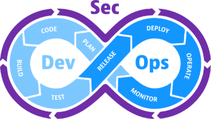

DevSecOps

Un DevSecOps (Desarrollo, Seguridad y Operaciones) es un profesional encargado de integrar la seguridad en cada una de las fases del ciclo de vida del desarrollo de software (SDLC).
A diferencia del enfoque tradicional, donde la seguridad se evaluaba al final del proyecto (justo antes de salir a producción), DevSecOps promueve la filosofía de "Shift Left" (mover la seguridad hacia la izquierda), lo que significa pensar, planificar y probar la seguridad desde el primer día de la codificación.
Sus funciones principales incluyen:
-
Automatización de la Seguridad (SecOps en CI/CD):
integran herramientas de análisis de código automatizado dentro de
las tuberías (pipelines) de despliegue continuo. Esto incluye:
- SAST (Static Application Security Testing): analiza el código fuente en busca de vulnerabilidades.
- DAST (Dynamic Application Security Testing): prueba la aplicación en ejecución contra ataques externos.
- SCA (Software Composition Analysis): revisa las dependencias y librerías de terceros en busca de fallos conocidos.
- Gestión de Identidades y Accesos (IAM): configuran políticas de privilegios mínimos para que los desarrolladores, sistemas y servicios solo tengan acceso a lo estrictamente necesario.
- Seguridad en la Nube y Contenedores: aseguran infraestructuras basadas en la nube y orquestadores como Docker y Kubernetes, verificando que las imágenes de los contenedores estén libres de vulnerabilidades.
- Respuesta a Incidentes y Monitoreo: implementan sistemas de monitoreo continuo (como SIEM) para detectar actividades sospechosas, analizar registros y mitigar amenazas rápidamente.
- Cultura y Colaboración: actúan como un puente entre los equipos de desarrollo (Dev), operaciones (Ops) y seguridad (Sec), educando a los desarrolladores sobre prácticas de Secure Coding para evitar errores comunes como inyecciones SQL o problemas de autenticación.
Cómo funciona
El mecanismo central de DevSecOps es la automatización integrada directamente en el pipeline de CI/CD. En lugar de depender de revisiones de seguridad manuales justo antes del lanzamiento, los equipos utilizan herramientas automatizadas que se ejecutan con cada confirmación de código (commit), solicitud de extracción (pull request) o compilación. Estas herramientas escanean el código fuente en busca de vulnerabilidades, verifican dependencias de terceros en busca de exploits conocidos, analizan imágenes de contenedores en busca de errores de configuración y prueban aplicaciones en ejecución en busca de fallas en tiempo de ejecución. Cuando se detecta una vulnerabilidad, el pipeline puede fallar automáticamente, bloquear la combinación (merge) o alertar al desarrollador de inmediato, reduciendo drásticamente el costo y el tiempo necesarios para solucionar el problema.
Por qué esto importa
Corregir una falla de seguridad en producción o después del despliegue es exponencialmente más costoso, estresante y requiere más tiempo que solucionarla mientras el código está siendo escrito activamente por el desarrollador. Al integrar la seguridad en el flujo de trabajo de desarrollo estándar, las organizaciones mantienen una alta velocidad de entrega sin sacrificar la seguridad. Esto transforma la seguridad de ser un bloqueador externo a convertirse en un habilitador para la entrega rápida y confiable de software.
| Idea | En la práctica |
|---|---|
| Automatizar todo | Nada de pasos manuales: build, tests, deploy y chequeos de seguridad los hace el pipeline |
| Infra como código | Los servidores se describen en archivos versionados, no se configuran a mano |
| Shift-left security | Escaneo de dependencias, secretos y código en cada commit |
| Feedback rápido | Si algo se rompe o es inseguro, te enterás en minutos, no en semanas |
Ejemplo concreto
Considere un flujo de trabajo estándar de GitHub Actions para una aplicación de Node.js. En lugar de esperar una auditoría de seguridad manual semanas más tarde, un enfoque de DevSecOps inyecta una herramienta de Análisis de Composición de Software (SCA) y una herramienta de Pruebas de Seguridad de Aplicaciones Estáticas (SAST) directamente en el pipeline de la solicitud de extracción.
name: Security Pipeline
on:
pull_request:
branches: [ main ]
jobs:
security-scan:
runs-on: ubuntu-latest
steps:
- name: Checkout code
uses: actions/checkout@v4
- name: Run Dependency Scan
uses: snyk/actions/node@master
env:
SNYK_TOKEN: ${{ secrets.SNYK_TOKEN }}
with:
args: --severity-threshold=high
- name: Run Static Code Analysis
run: |
npm install
npx eslint . --plugin security
En este pipeline, cada vez que un desarrollador abre una solicitud de extracción, el código es escaneado automáticamente por Snyk para verificar si los paquetes npm de terceros tienen vulnerabilidades conocidas, y ESLint con complementos de seguridad verifica el código fuente personalizado en busca de patrones riesgosos como vectores de inyección SQL o credenciales codificadas. Si se encuentra una vulnerabilidad de alta gravedad, el pipeline falla, bloqueando la fusión y proporcionando retroalimentación inmediata y procesable al ingeniero antes de que el código llegue a una rama compartida.
El mapa
Servidores y sistema operativo
-
SSH: conectarse con claves (no con contraseña),
deshabilitar el login de root, cambiar el puerto por defecto,
usar
fail2ban. - Servidores web: Nginx o Apache como proxy inverso delante de tu app, terminación TLS (Let's Encrypt / certbot), balanceo de carga básico.
-
Gestión del SO: usuarios y grupos, paquetes
(
apt,dnf), cron, espacio en disco, sistemas de archivos y puntos de montaje, backups y cómo restaurarlos.
Contenedores
Un contenedor empaqueta tu app con todo lo que necesita para correr, así funciona igual en tu máquina y en el servidor.
-
Docker: imágenes y capas, escribir un
Dockerfile,build/run/exec, volúmenes para datos que deben sobrevivir, redes entre contenedores,docker composepara levantar varios juntos. -
Imágenes bien hechas: partir de una base mínima
(
alpine,distroless), builds multi-stage para no arrastrar el compilador, correr como usuario sin privilegios, no meter secretos en la imagen. -
Seguridad: subir las imágenes a un
registry y escanearlas con
TrivyoGrypepara detectar librerías con vulnerabilidades conocidas (CVEs).
Orquestación
Cuando tenés muchos contenedores en varios servidores, necesitás algo que decida dónde corre cada uno, los reinicie si se caen y reparta el tráfico. Eso es Kubernetes.
-
Kubernetes: pods,
Deployments,Services,Ingress,ConfigMapsySecrets, escalado. -
Empaquetado:
HelmoKustomizepara no repetir YAML en cada entorno. -
Seguridad:
RBAC(quién puede hacer qué),NetworkPolicies(qué pod habla con qué pod),Pod Security/ admission controllers,Secretscifrados de verdad.
Infraestructura como código (IaC)
En vez de crear servidores a mano en la consola de la nube, los describís en archivos. Ese archivo se versiona, se revisa en un Pull Request y se puede recrear la infra entera desde cero.
-
Aprovisionar: Terraform (o su fork
OpenTofu) — el estado, los módulos,
el ciclo
plan/apply. - Configurar: Ansible para dejar un servidor ya creado con los paquetes y la config que corresponde.
-
Seguridad: escanear el código de infra con
Checkovotfsecantes de aplicarlo (buckets abiertos, puertos de más, cifrado desactivado).
CI/CD
El pipeline: cada push baja el código, lo compila, corre los tests y — si todo pasa — lo despliega. El detalle está en la página de Jenkins; acá el resumen.
- Herramientas: Jenkins, GitHub Actions, GitLab CI. Todas resuelven lo mismo: pipeline como código en un archivo del repo.
- Estrategias de despliegue: rolling (de a poco), blue-green (dos entornos, se conmuta), canary (primero a un porcentaje chico de los usuarios).
- Seguridad: el pipeline es el lugar donde se integran todos los chequeos: escaneo de dependencias, de secretos, SAST, escaneo de la imagen. Si algo grave aparece, el build falla y no se despliega.
Seguridad (el "Sec")
Esta es la parte que diferencia DevSecOps de DevOps: en vez de una auditoría al final, la seguridad son controles automatizados que corren en cada etapa.
Temario de seguridad
Las áreas a ir cubriendo, de lo básico a lo avanzado:
- Fundamentos de Seguridad (Security Fundamentals): triángulo CIA, autenticación, autorización y principios de seguridad.
- Seguridad de Redes (Network Security): redes básicas, firewalls, segmentación y protocolos seguros.
- Seguridad de Aplicaciones (Application Security): OWASP Top Ten, código seguro, prevención de inyecciones y evaluación de vulnerabilidades.
- Criptografía (Cryptography): cifrado simétrico y asimétrico, hashing y gestión de llaves.
- Modelado de Amenazas (Threat Modeling): conceptos, frameworks como STRIDE / PASTA, integración en flujos de trabajo y mapeo de superficies de ataque.
- Seguridad de Contenedores (Container Security): seguridad en Docker, escaneo de imágenes, seguridad en Kubernetes y protección en tiempo de ejecución.
- Seguridad en Pipelines (Pipeline Security): cultura DevSecOps, endurecimiento de pipelines de construcción, gestión de dependencias y pruebas automatizadas.
- Seguridad en la Nube (Cloud Security): gestión de identidades, infraestructura en la nube, planificación multi-región y seguridad de APIs.
- Operaciones de Seguridad (Security Operations): monitoreo y registro, implementación de SIEM, manejo de alertas y herramientas de vulnerabilidad.
- Respuesta a Incidentes (Incident Response): ciclo de respuesta, forensia, estrategias de contención y análisis de causa raíz.
- Automatización y Herramientas (Automation and Tooling): scripting de seguridad, conceptos de SOAR, parcheo automatizado y ecosistema de herramientas.
- Cumplimiento y Gobernanza (Compliance and Governance): mapeo de frameworks, estándares regulatorios, cuantificación de riesgos y preparación para auditorías.
Abajo, los pilares que más tocan al pipeline del día a día:
Modelado de amenazas
Antes de construir algo, sentarse a pensar cómo se podría atacar. Se dibuja el flujo de datos del sistema y sobre cada parte se pregunta qué puede salir mal. Un método común es STRIDE: suplantación de identidad (Spoofing), manipulación de datos (Tampering), repudio, filtración de información (Information disclosure), denegación de servicio (DoS) y elevación de privilegios. De ahí salen requisitos de seguridad concretos y casos de abuso para testear.
AppSec — análisis del código y la app
Los controles que se enganchan al pipeline:
| Sigla | Qué revisa | Ejemplos |
|---|---|---|
| SCA | Tus dependencias (librerías de terceros) con CVEs | Trivy, Dependabot, Snyk, OWASP Dependency-Check |
| SAST | Tu propio código, sin ejecutarlo | Semgrep, SonarQube, CodeQL |
| DAST | La app ya corriendo, atacándola desde afuera | OWASP ZAP |
| IAST | La app instrumentada por dentro mientras se la testea | Contrast, agentes del propio APM |
| Secretos | Tokens y contraseñas comiteadas por error | gitleaks, trufflehog |
De referencia: el OWASP Top 10 (las diez familias de fallos web más comunes) y OWASP ASVS (una checklist de requisitos de seguridad por nivel).
Cadena de suministro de software
Asegurar que lo que llega a producción es lo que vos compilaste, sin nada inyectado en el medio.
-
SBOM (Software Bill of Materials): la
lista completa de todo lo que compone un artefacto. Formatos
CycloneDXySPDX. -
Firma y procedencia: firmar imágenes y artefactos
con
cosign/ Sigstore, y adjuntar attestations que dicen cómo y dónde se construyó (in-toto). - SLSA: un marco con niveles que endurecen progresivamente el proceso de build contra manipulación.
- En el pipeline: fijar (pin) las versiones de las dependencias y de las actions, y verificar las firmas antes de desplegar.
Gestión de secretos
- Nunca en el repo ni en variables de entorno en texto plano.
-
Almacén central:
Vault(además da secretos dinámicos: credenciales que se crean al momento y expiran solas), o para KubernetesExternal Secrets Operator,SOPS,Sealed Secrets. - Rotación: cambiar los secretos con regularidad y poder revocarlos rápido si se filtran.
Política como código
Las reglas de qué está permitido dejan de estar en un documento y
pasan a ser código que el pipeline y el clúster evalúan solos: "no se
admiten imágenes sin firmar", "ningún bucket público", "todo pod con
límites de CPU". Herramientas: OPA / Rego,
Gatekeeper y Kyverno (admission control en
Kubernetes), Conftest, Sentinel.
Gestión de vulnerabilidades
Los escáneres devuelven cientos de hallazgos; el trabajo es priorizarlos y cerrarlos.
- CVE es el identificador de una vulnerabilidad; CVSS su puntaje de gravedad (0–10); EPSS estima la probabilidad de que se explote de verdad.
- Se prioriza combinando gravedad, exposición (¿es alcanzable desde afuera?) y explotabilidad, no solo el CVSS.
- VEX: un documento que declara "este CVE no me afecta porque el código vulnerable no se usa", para descartar ruido.
- SLA de parcheo: plazos máximos para corregir según gravedad; un lugar central para el seguimiento (p. ej. DefectDojo).
Cumplimiento como código
Traducir los marcos regulatorios (CIS Benchmarks,
NIST 800-53, ISO 27001,
PCI-DSS, SOC 2) a chequeos
automáticos que además generan la evidencia para la auditoría.
Herramientas: OpenSCAP, Chef InSpec,
Cloud Custodian.
Hardening
Aplicar los CIS Benchmarks al SO, a Docker y a
Kubernetes; reducir la superficie de ataque (imágenes mínimas, sin
shell, sin root); perfiles seccomp / AppArmor;
y un proceso de parcheo que no deje CVEs abiertas durante meses.
Observabilidad
Saber qué está pasando en producción sin adivinar. Tres patas:
- Logs: qué pasó y cuándo. Loki, o el stack ELK (Elasticsearch + Logstash + Kibana).
- Métricas: números en el tiempo (CPU, memoria, requests por segundo, latencia). Prometheus para juntarlas, Grafana para los tableros.
- Trazas: el recorrido de una request por todos los servicios. OpenTelemetry, Jaeger, Tempo.
-
Alertas y objetivos:
SLI(qué medís),SLO(qué valor querés sostener), alertas cuando se incumple. -
Seguridad — detección y respuesta:
detección en tiempo de ejecución con
Falco(basado eneBPF: alerta ante llamadas al sistema sospechosas), auditoría de Kubernetes, y todo el log de seguridad hacia un SIEM que corre reglas de detección de amenazas. Cuando salta un incidente: contención, análisis forense y un postmortem sin culpa (ver Cultura).
Cloud
Elegir un proveedor y aprenderlo bien (AWS, Azure o GCP; los conceptos se trasladan). Lo mínimo:
- IAM: usuarios, roles y políticas. Es lo primero y lo más fácil de hacer mal.
- Red: VPC / VNet, subredes públicas y privadas, security groups.
- Cómputo y almacenamiento: máquinas virtuales, contenedores gestionados (EKS/AKS/GKE), object storage (S3 y equivalentes), bases de datos gestionadas.
- Seguridad: principio de mínimo privilegio en IAM, cifrado en reposo y en tránsito, CSPM para detectar configuraciones inseguras (Prowler, ScoutSuite).
- Costes: etiquetar recursos, alertas de gasto, apagar lo que no se usa.
Cultura
La parte que no es una herramienta. Sin esto, lo demás es solo tooling.
- Ownership: "you build it, you run it" — el equipo que hace el código lo opera y responde por él.
- Shift-left: pensar la seguridad y la operabilidad desde el diseño, no al final. Threat modeling: sentarse a pensar cómo se podría atacar esto antes de construirlo.
- Postmortems sin culpa: después de un incidente se escribe qué pasó, qué falló del sistema y qué se cambia para que no vuelva a pasar. No se nombra culpables.
- Gestión de incidentes: roles claros (quién comanda, quién comunica), runbooks, guardias rotativas.
- Security champions: una persona por equipo que hace de puente con seguridad, revisa los hallazgos y difunde buenas prácticas. La seguridad no la hace un equipo aparte.
- Modelo de madurez: marcos como OWASP SAMM o DSOMM para medir en qué nivel está la organización y qué mejorar. La idea de fondo: la seguridad habilita entregar rápido, no bloquea.